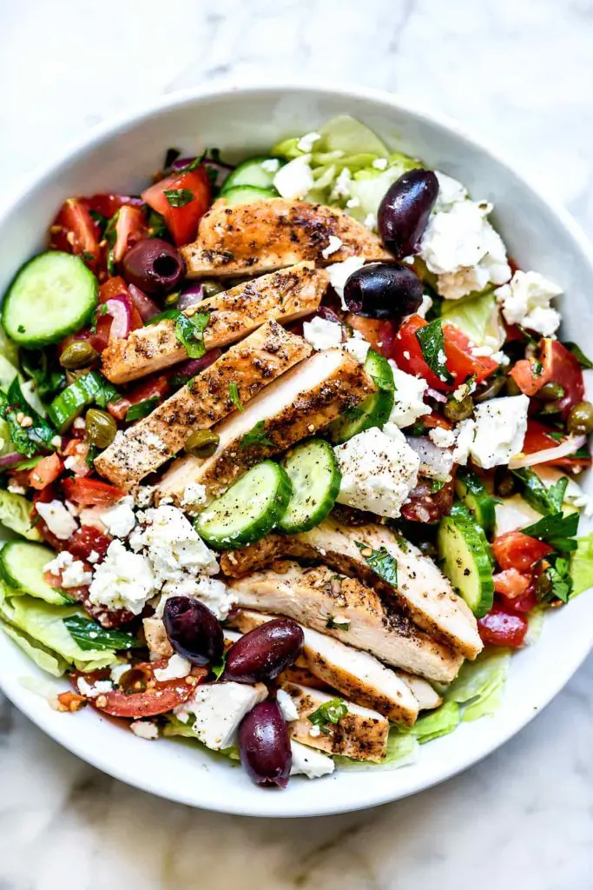

Greek Salad

Fresh Grilled Chicken Greek Salad
Light greek salad perfect for summer days and weight loss.
Ingredients
- 2 teaspoons dried oregano
- 2 teaspoons dried basil
- 1 teaspoon dried thyme
- 1 teaspoon paprika
- 1 teaspoon garlic powder
- Kosher salt and freshly ground black pepper, to taste
- 2 pounds boneless, skinless chicken thighs
- 1 head romaine, roughly chopped
- 1 cup diced cucumber
- 1 cup halved cherry tomatoes
- 1 avocado, halved, seeded, peeled and sliced
- 1/2 small red onion, thinkly sliced
- 1/2 cup pitted kalamata olives
- 4 ounces feta, cubed
For the tzatziki Dressing
- 1 cup Greek yogurt
- 5 tablespoons buttermilk
- 2 tablespoons chopped fresh dill
- 2 tablespoons freshly squeezed lemon juice
- 2 teaspoons lemon zest
- 1 clove garlic, minced
- Kosher salt and freshly ground black pepper, to taste
Steps
-
In a medium bowl, whisk together Greek yogurt, buttermilk, dill, lemon juice,
lemon zest and garlic; season with salt and pepper, to taste; set aside.
-
In a small bowl, compine oregano, basil, thyme, paprika, garlic powder, 1 teaspoon
salt and 1/2 teaspoon pepper. Season chicken with oregano mixture.
-
Preheat grill to medium heat.
-
Add chicken to grill, and cook, turning occasionally, until chicken is completely
cooked through, reaching an internal temperature of 165 degrees F, about 10 minutes.
-
To assemble the salad, place romaine lettuce ina large bowl; top with chicken,
cucumber, tomatoes, avocado, onion, olives and feta. Pour the tzatziki dressing on
top of the salad and gently toss to combine.
-
Serve immediately.